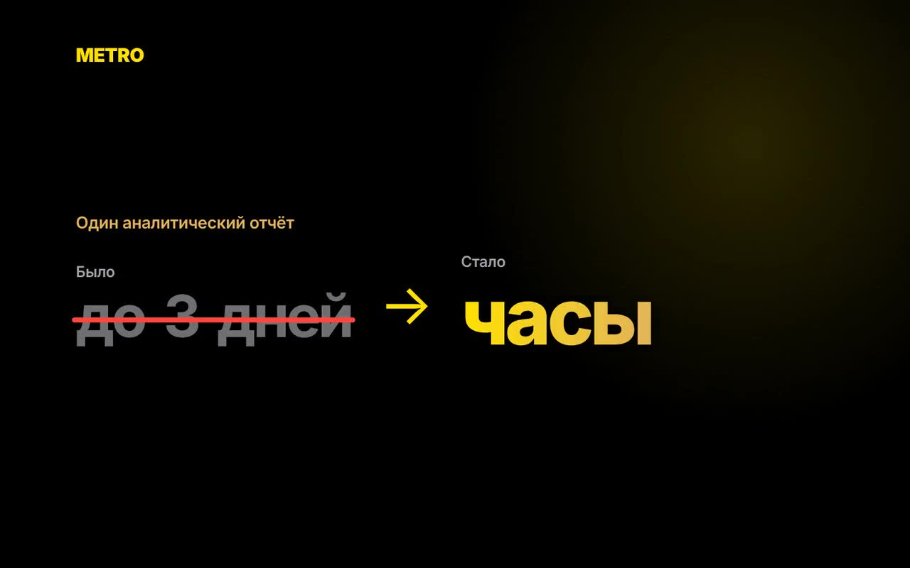
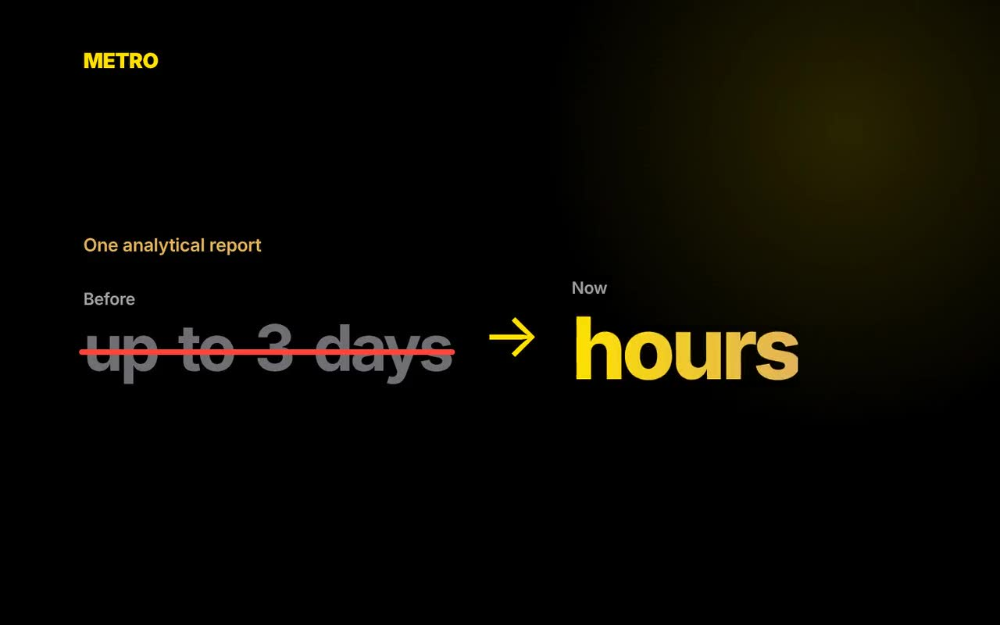
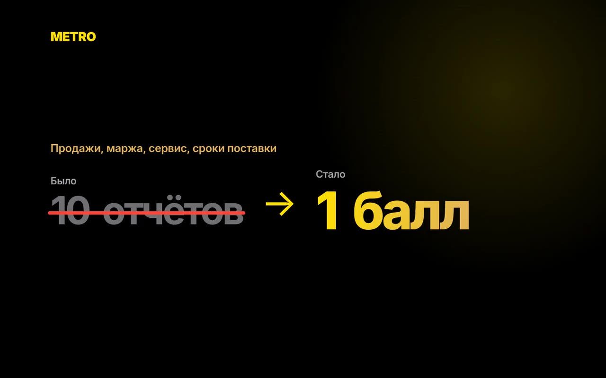
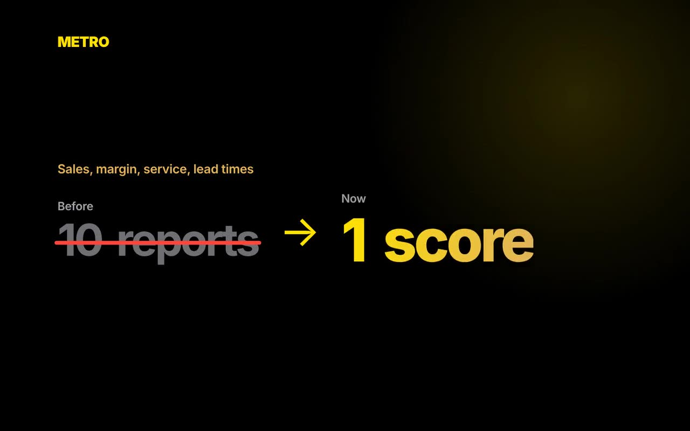
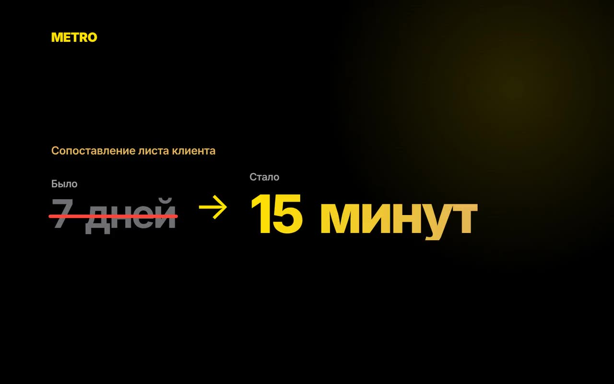
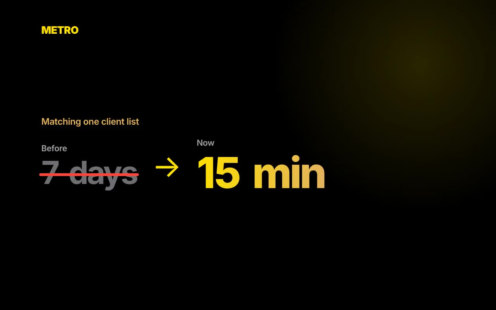
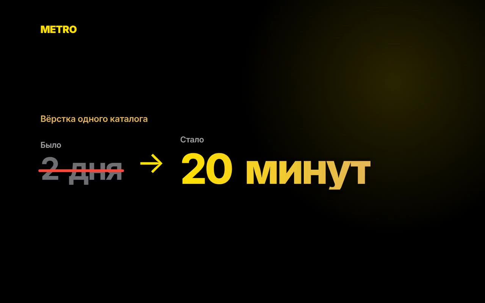
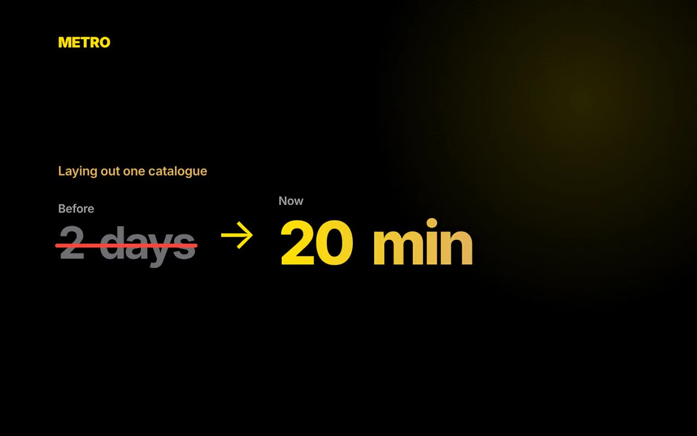

Бейбіт Акыш · METRO Cash & Carry KazakhstanBeibit Akysh · METRO Cash & Carry Kazakhstan
Инструменты, которые заменили ручную рутинуTools that replaced manual routine
Четыре инструмента, которые я спроектировал и собрал для коммерческих команд METRO Kazakhstan. Генератор каталогов уже внедрили METRO и MAKRO в Сербии, Румынии, Испании и Португалии.Four tools I designed and built for the commercial teams of METRO Kazakhstan. The catalogue generator has been adopted by METRO and MAKRO in Serbia, Romania, Spain and Portugal.


АналитикаAnalyticsПродажи, маржа, прогнозSales, margin, forecast

ПоставщикиSuppliersРейтинг 0–100 и сравнениеScore 0–100 and comparison

Закупочные листыPurchase listsСписок клиента → артикулыClient list → articles

КаталогиCataloguesКаталог KZ + RU в PDFKZ + RU catalogue as PDFАналитика продаж и прогнозSales analytics and forecasting
Отчёт, который собирался до 3 дней, теперь готов за часыA report that took up to 3 days is now ready in hours
ПроблемаProblem
Выгрузка продаж на миллионы строк не помещается в Excel. Один аналитический отчёт собирался до трёх дней, а каждый новый вопрос ждал следующего отчёта.A sales export of millions of rows does not fit in Excel. One analytical report took up to three days, and every new question waited for the next one.
РешениеSolution
Выгрузка перетаскивается в инструмент, и он сам строит KPI и срезы: цены, закуп, маржа, промо, клиенты и корзина. Клик по строке раскрывает её до клиента и артикула.Drop the export into the tool and it builds the KPIs and breakdowns itself: prices, purchase cost, margin, promo, clients and basket. Click any row to drill down to client and article.
Что это даётResult
до 3 днейup to 3 days → часыhours
Отчёты и выводы готовы за часы. Коммерция сама видит, где растут продажи, где теряется маржа и чего ждать в следующем месяце.Reports and insights are ready in hours. The commercial team sees where sales grow, where margin leaks and what to expect next month.
Динамика ценPrice dynamics
По месяцам и по типу цены: индивидуальная (CIP), обычная и промо.By month and by price type: individual (CIP), regular and promo.
Инфляция в закупеPurchase-cost inflation
Как растёт закупочная цена и что это делает с маржой каждого товара.How the purchase cost rises and what that does to each product’s margin.
Динамика маржиMargin dynamics
Маржа и маржа % по месяцам, категориям, товарам и типам цены.Margin and margin % by month, category, product and price type.
ПромоPromo
Доля промо в продажах и марже, и какие клиенты покупают только по акции.Promo share in sales and margin, and which clients buy only on promotion.
Кто, что и где берётWho buys what, and where
Клиенты, торговые центры и каналы: самовывоз или доставка, частота покупок.Clients, stores and channels: cash & carry or delivery, purchase frequency.
По какой цене и с какой корзинойAt what price, with what basket
При какой цене клиент покупает, средняя корзина, LTV и отток.The price at which a client buys, average basket, LTV and churn.
Автопрогноз: чего ждать в следующем месяце, если не держать текущий темпAuto-forecast: what to expect next month if the current pace is not kept
Прогноз строится по прошлым данным каждого артикула и показывает, сколько нужно продать, чтобы не потерять доход при новой цене.The forecast is built from each article’s past data and shows how much you need to sell to keep income at a new price.
- Прайс-сенситивностьPrice sensitivity
- Промо-сенситивностьPromo sensitivity
- Волатильность ценPrice volatility
- Эластичность спроса по историиDemand elasticity from history
- Работает офлайнWorks offline
- Данные не уходят третьим лицамNo data goes to third parties
- Соответствует комплаенсуCompliance-ready
- Онбординг-тур по каждой метрикеOnboarding tour for every metric
- 10 вкладок: время, клиенты, LTV, товары, каналы, P&L10 tabs: time, clients, LTV, products, channels, P&L
- Price Index к конкурентамPrice Index vs competitors
- Выгрузка среза в ExcelExport any view to Excel
- Светлая и тёмная темаLight and dark theme
Рейтинг поставщиковSupplier ranking
Брать ли ассортимент у поставщика — решение по цифрамShould we take a supplier’s range? Decide by the numbers
ПроблемаProblem
Продажи, маржа, уровень сервиса и сроки поставки лежали в разных отчётах. Каждый категорийный менеджер оценивал поставщика по-своему.Sales, margin, service level and lead times sat in different reports. Every category manager judged suppliers their own way.
РешениеSolution
Два отчёта загружаются одним движением, тип определяется автоматически. Инструмент считает балл 0–100 по 10 критериям, даёт рекомендацию и сравнивает до 4 поставщиков бок о бок.Two reports load in one move, and the type is detected automatically. The tool scores 0–100 across 10 criteria, gives a recommendation and compares up to 4 suppliers side by side.
Что это даётResult
Одна методика для всех категорий. Решение о вводе SKU можно проверить: у каждого балла указаны источник и формула.One method for every category. Any SKU listing decision can be checked: every score shows its source and formula.
Критерии и весаCriteria and weights
- Работает офлайнWorks offline
- Данные не уходят третьим лицамNo data goes to third parties
- Соответствует комплаенсуCompliance-ready
- Онбординг: выбор языка и тур из 7 шаговOnboarding: language choice and a 7-step tour
- Импорт и локальные — разные порогиImport and local suppliers use different thresholds
- Разрез по категориямBreakdown by category
- История оценокAssessment history
- Печать оценки в PDFPrint assessment to PDF
Сопоставление закупочных листовPurchase list matching
Лист клиента — в артикулы METRO за 15 минут вместо 7 днейA client list turned into METRO articles in 15 minutes instead of 7 days
ПроблемаProblem
Ресторан или магазин присылает список в свободной форме: «мацарелла», «ketchup», «сахар песок». Подбор артикулов на одного клиента занимал до 7 дней.A restaurant or shop sends a free-form list with typos and Latin spellings. Matching articles for one client took up to 7 days.
РешениеSolution
Загружаем выгрузку ассортимента и вставляем лист как есть. Инструмент находит артикулы с учётом опечаток и транслитерации, включая казахские буквы, и показывает цену с НДС и остаток по магазину.Load the assortment export and paste the list as is. The tool finds articles despite typos and transliteration, Kazakh letters included, and shows the price with VAT and stock per store.
Что это даётResult
7 дней7 days → 15 минут15 min
Предложение на всю корзину клиента в тот же день. Собственные марки METRO стоят первыми, поэтому предложение маржинальнее.A same-day offer for the client’s whole basket. METRO private labels come first, so the offer carries more margin.
- Работает офлайнWorks offline
- Данные не уходят третьим лицамNo data goes to third parties
- Соответствует комплаенсуCompliance-ready
- Онбординг-тур из 11 шагов11-step onboarding tour
- Ползунок точности поискаSearch precision slider
- Фильтр по магазинуStore filter
- Сортировка: совпадение, СТМ, остатокSort by match, private label, stock
- Excel в один кликExcel in one click
Генератор каталогов и POS-материаловCatalogue and POS-material generator
Промо-каталог на казахском и русском — за 20 минут вместо двух днейA Kazakh–Russian promo catalogue in 20 minutes instead of two days
ПроблемаProblem
Каждая акция ждала макет от дизайнера: цены, перевод на казахский, сверка и правки по кругу. Вёрстка одного каталога занимала два дня.Every promotion waited for a designer’s layout: prices, Kazakh translation, checks and endless edits. Laying out one catalogue took two days.
РешениеSolution
База товаров с фото загружается из Excel. Менеджер вставляет список артикулов и получает карточки с фото, названиями на двух языках, старой и новой ценой и скидкой, затем выгружает PDF в фирменном стиле. В PDF всё кликабельно: каждый товар ведёт на свою страницу на сайте METRO, а сам каталог можно сразу отправить клиенту в WhatsApp — ссылки работают и там.The product base with photos loads from Excel. A manager pastes article codes and gets cards with photos, names in two languages, old and new price and discount, then exports a branded PDF. Everything in the PDF is clickable: each product opens its page on the METRO website, and the catalogue can be sent to a client on WhatsApp straight away, with links working there too.
Что это даётResult
2 дня2 days → 20 минут20 min
Каталог готов в тот момент, когда согласована акция, а скидка считается сама. Инструмент внедрили METRO и MAKRO в Сербии, Румынии, Испании и Португалии.The catalogue is ready the moment a promotion is approved, and discounts calculate themselves. METRO and MAKRO adopted the tool in Serbia, Romania, Spain and Portugal.
- Работает офлайнWorks offline
- Данные не уходят третьим лицамNo data goes to third parties
- Соответствует комплаенсуCompliance-ready
- Онбординг: 9 шагов по редакторуOnboarding: 9 steps through the editor
- Кликабельный PDF: товар → сайт, можно в WhatsAppClickable PDF: product → web page, WhatsApp-ready
- Форматы A2–A5A2–A5 formats
- Названия на KZ, RU или обаNames in KZ, RU or both
- Промо и оптовые ценыPromo and wholesale prices
- Прайс-лист тем же инструментомPrice lists with the same tool
Общие принципыShared principles
Работает офлайнWorks offline
Инструмент открывается в браузере без интернета, сервера и установки. Его легко передать в другую страну.The tool opens in a browser with no internet, server or installation. It is easy to hand over to another country.
Данные не уходят третьим лицамNo data reaches third parties
Отчёты обрабатываются на компьютере пользователя и никуда не отправляются: ни в облако, ни во внешние сервисы.Reports are processed on the user’s computer and sent nowhere: no cloud, no external services.
Полностью соответствует комплаенсуFully compliant
Коммерческие данные не покидают периметр компании, поэтому инструменты соответствуют требованиям комплаенса без доработок.Commercial data never leaves the company perimeter, so the tools meet compliance requirements as they are.
Учит самTeaches itself
Встроенный онбординг-тур при первом запуске и подсказки на каждом поле. Новому сотруднику не нужно отдельное обучение.A built-in onboarding tour on first launch and hints on every field. New staff need no separate training.
Сделано под реальные выгрузкиBuilt for real exports
Инструменты читают те отчёты, которые команды уже получают. Ничего не нужно переделывать.The tools read the reports the teams already receive. Nothing needs to be rebuilt.